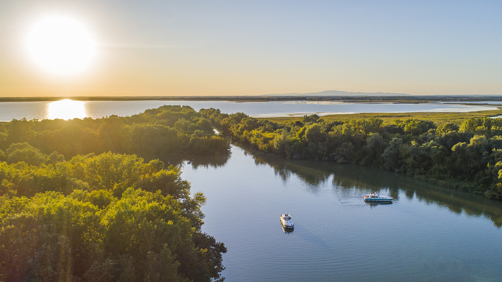
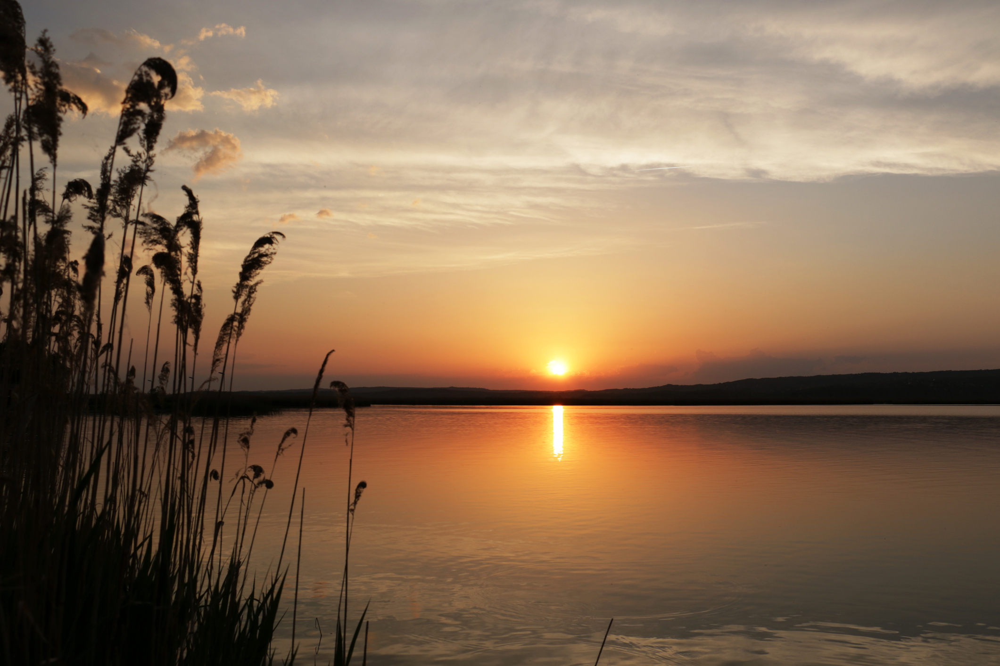

Balaton
A Balaton Közép-Európa legnagyobb tava, amelyet a "magyar tengerként" is emlegetnek. Népszerű turisztikai célpont.

Tisza
A Tisza Magyarország második legnagyobb folyója, amely különleges élővilágával és nyugodt partjaival ismert.
Duna

Velencei tó
Az Austerity tank-ek az egyik legmodernebb mozdony ezen a listán amit a War Department építette elősször 1943-ban. Ezek a mozdonyok leginkább ipari munkát végeztek. Az utolsót 1984-ben vonták ki a forgalomból gyári tulajdonban.
